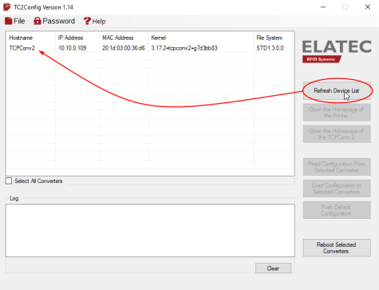
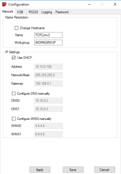

Configurer le boîtier TCP Conv
Prérequis organisationnel
La configuration du boîtier TCPConv s'effectue à l'aide de l'outil TCConfig.exe téléchargé préalablement depuis le site Elatec.
Procédure
Pour configurer les boîtiers Elatec :
-
double-cliquez sur le fichier TCConfig.exe :
-
le ou les boîtiers connectés au réseau s'affichent dans la liste Devices de l'interface :

.
-
cliquez sur le bouton Configuration ;
-
dans la boîte Login, saisissez :
-
Name : le nom de l'administrateur qui sera habilité à configurer le boîtier ;
-
Password : le mot de passe de l'administrateur qui sera habilité à configurer le boîtier.
-
-
cliquez sur le bouton OK pour enregistrer le nom de l'administrateur ainsi que son mot de passe :

-
dans l'interface Configuration > onglet Network, remplissez les champs suivants :
-
Name : saisissez le nom du boîtier. Non-utilisé par Watchdoc, ce nom sert principalement à faciliter les tâches de maintenance. Le nom est limité à 16 caractères (ou moins si ces caractères sont accentués).
-
Address : indiquez l'adresse IP fixe utiliséecomme BoxId dans la configuration de la file d'impression Watchdoc ;
-
Network mask : indiquez le masque réseau dans lequel est situé le boîtier TCPConv ;
-
Gateway : indiquez la passerelle par laquelle passe le boîtier si c'est le cas.
-
dans l'interface Configuration > onglet USB, remplissez les champs suivants relatifs au boîtier USB:
-
TCP Client : cochez la case pour indiquer que le boîtier est un client TCP ;
-
Remote IP Address : indiquez l'addresse IP du serveur Watchdoc® ;
-
Remote Port : indiquez 5752 comme numéro de port ;
-
Connect if data available et Connect on any character : cochez les cases ;
-
Disconnect timeout : indiquez dans ce champ le délai au-delà duquel le boitier se déconnecte. Par défaut, ce délai est fixé à 5 minutes.
-
une fois la configuration terminée, cliquez sur OK pour l'enregistrer.
→ Les opérations réalisées s'affichent alors dans une fenêtre.
-
redémarrez le boîtier pour que la nouvelle configuration soit appliquée :
-
mettez le boîtier hors tension puis rallumez-le ;
-
appuyez sur le bouton Reset du boîtier, puis sur le bouton Search ;
-
cliquez sur le bouton Restart de l'interface de configuration